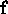
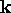

When a position estimate is required, an image is obtained and landmarks are extracted by selecting the local maxima of edge density, as described in Chapter 3. The extracted candidate landmarks must then be matched to the tracked landmarks in the database, which is accomplished using the procedure outlined in Chapter 4, neglecting the steps which modify the database. That is, each landmark candidate l undergoes a local position adjustment to find a best match to each tracked landmark T, and the tracked landmark whose prototype is unambiguously closest to the encoding of l is selected as the match. Figure 5.1 shows the results of matching the landmarks observed in an image with the prototypes of a set of tracked landmarks (which were depicted previously in Figure 4.2(b)). The top row of intensity distributions corresponds to the landmarks observed in the image (after their positions were adjusted to optimise the matching), whereas the bottom row represents the prototypes to which the corresponding landmarks were matched. While at first glance, the images appear to be identical, there are some very subtle differences in appearance, as well as undepicted differences in position in the image.

Figure 5.1: Landmark-prototype matches for a single image: The top row of
intensity distributions corresponds to the landmarks observed in the
image (after their positions were adjusted to optimise the
matching), whereas the bottom row represents the prototypes to which
the corresponding landmarks were matched. While at first glance,
the images appear to be identical, there are some very subtle
differences in appearance.
Once landmark matching is accomplished, we exploit an assumption of linear variation in the landmark characteristics with respect to camera pose in order to obtain a position estimate. If the assumption of smoothly linear local variation in the landmark is true, then the encoding of the landmark observed from an unknown camera position will be a linear combination of the encodings of the tracked models, allowing us to interpolate between the sample positions in the database. We will later present a method for quantitatively evaluating the reliability of the linearity assumption, and which will allow us to obtain a measure of confidence in the results. For the remainder of this section, let us assume that we have observed a single landmark l in the world and it has been correctly matched to the tracked landmark T.
Let us define the encoding of a landmark candidate
l as the projection of the intensity distribution in the image
neighbourhood represented by l into the subspace defined by the
principal components decomposition of the set of all tracked landmark
prototypes. We repeat equation 4.2 with slightly different
terminology here for reference:
where is the local intensity distribution of l
normalised to unit magnitude and  is the set of principal
directions of the space defined by the tracked landmark prototypes.
is the set of principal
directions of the space defined by the tracked landmark prototypes.
Let us now define a feature-vector  associated with
a landmark candidate l as the principal components encoding
, concatenated with two vector quantities: the image
position  of the landmark, and the camera position
of the landmark, and the camera position
 from which the landmark was observed:
from which the landmark was observed:
where, in this particular instance alone, the notation  represents the concatenation of the vectors
represents the concatenation of the vectors
 and
and  .
.
Given the associated feature vector for each landmark
 in the tracked landmark
in the tracked landmark  , we
construct a matrix as the composite matrix of all
, arranged in column-wise fashion, and then take the
singular values decomposition of ,
, we
construct a matrix as the composite matrix of all
, arranged in column-wise fashion, and then take the
singular values decomposition of ,
to obtain , representing the set of eigenvectors of the
tracked landmark T arranged in column-wise fashion. Note that since
is a component of each ,
encodes camera position along with appearance. Now consider the
feature vector associated with l, the observed landmark
for which we have no pose information - that is, the  component of is undetermined. If we project
into the subspace defined by to obtain
component of is undetermined. If we project
into the subspace defined by to obtain
and then reconstruct from to obtain the
feature vector
then the resulting reconstruction is augmented by a
camera pose estimate that interpolates between the nearest
eigenvectors in . In practice, the initial value of the
undetermined camera pose,  in will play a
role in the resulting estimate and so we substitute the new value of
in will play a
role in the resulting estimate and so we substitute the new value of
 back into and repeat the operation,
reconstructing until the estimate converges to a
steady state. This repeated operation, which constitutes the recovery
of the unknown
back into and repeat the operation,
reconstructing until the estimate converges to a
steady state. This repeated operation, which constitutes the recovery
of the unknown  is summarised in Figure 5.2.
is summarised in Figure 5.2.
Figure 5.2: The recovery operation. The unknown
camera position  associated with a landmark l is
recovered by repeatedly reconstructing the landmark feature vector in
the subspace defined by the matching tracked landmark.
associated with a landmark l is
recovered by repeatedly reconstructing the landmark feature vector in
the subspace defined by the matching tracked landmark.
Formally,
where is the optimising scatter matrix of the feature
vectors in T, and hence corresponds to the
least-squares approximation of in the subspace defined by
the feature vectors of the tracked tracked landmark T. Convergence
is guaranteed by the fact that is column-orthonormal and
hence is symmetric and positive-definite.
Convergence is typically achieved in two or three iterations, as
depicted in Figure 5.3.
Figure 5.3: Convergence
properties for a single training set. The average convergence path,
expressed in terms of distance from the steady-state, is plotted as
a function of the number of iterations.
There are some subtleties to the estimation procedure that we have not
yet acknowledged. First, since  is unknown at the outset,
there is an issue of what value to assign to
is unknown at the outset,
there is an issue of what value to assign to  in
. In practice, we set
in
. In practice, we set  to be the mean of
all camera poses in T. One might choose instead to
use an a priori pose estimate. We will consider this
possibility when we present our experimental results in
Chapter 6. Second, there is an issue over how the
camera pose
to be the mean of
all camera poses in T. One might choose instead to
use an a priori pose estimate. We will consider this
possibility when we present our experimental results in
Chapter 6. Second, there is an issue over how the
camera pose  and image position
and image position  should be
weighted when constructing a feature vector. Ideally, one would scale
should be
weighted when constructing a feature vector. Ideally, one would scale
 down to a tiny fraction of in order to
downplay the effect that
down to a tiny fraction of in order to
downplay the effect that  has on the subspace. If
has on the subspace. If  plays too strong a role in the subspace, then the reconstruction
process will be ineffective. As for the image position, one can
arbitrarily scale
plays too strong a role in the subspace, then the reconstruction
process will be ineffective. As for the image position, one can
arbitrarily scale  in order to weight its relative
importance versus . Such a weighting determines the degree
to which we favour image geometry over appearance. We will
consider the effects of varying the weight of both
in order to weight its relative
importance versus . Such a weighting determines the degree
to which we favour image geometry over appearance. We will
consider the effects of varying the weight of both  and
and
 in Chapter 6.
in Chapter 6.
Figure 5.4 depicts a set of estimates obtained for the landmarks detected in a single image. While most of the estimates are reasonably accurate, at least one point may be considered an outlier, most likely produced by nonlinearities in the tracked landmark, poor tracking, or a match that is altogether incorrect. The next section will deal with the problem of detecting and removing outliers as well as combining the good estimates in way that is numerically robust.
Figure 5.4: Position
estimate for a single test image. Each 'x' marks an estimate as
obtained from a single landmark in the image. The 'o' represents
the actual position. The training images were obtained at the
locations of the grid intersections.